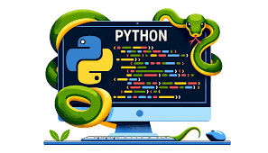

Au cours de mes études, j’ai renforcé ces compétences grâce à la pratique du langage Python. Je maîtrise les concepts essentiels tels que les structures de données, la programmation orientée objet, la gestion des fichiers, ainsi que la manipulation de bibliothèques courantes. J’ai eu l’occasion de développer des scripts d’automatisation, des outils d’analyse de données, ainsi que des programmes orientés réseau, ce qui m’a permis de comprendre l’importance de la modularité, de la lisibilité et des bonnes pratiques de développement.
Mon parcours en Réseaux et Télécommunications me permet d’aborder Python comme un outil polyvalent, capable de répondre à des besoins variés : automatisation de tâches, traitement de données, interactions réseau ou encore prototypage rapide